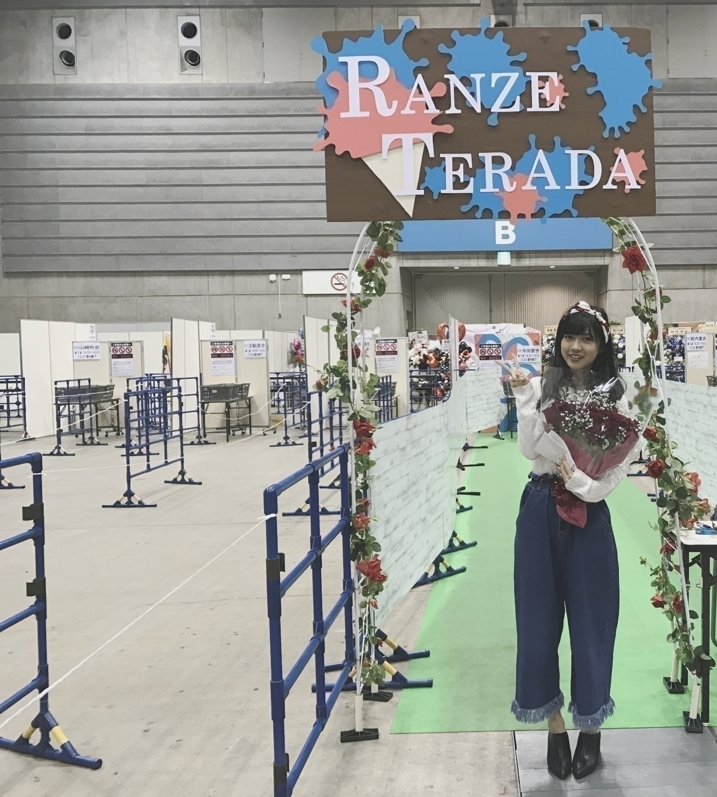
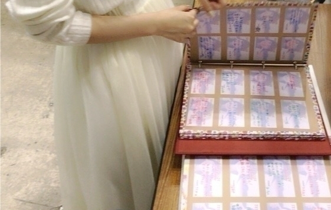
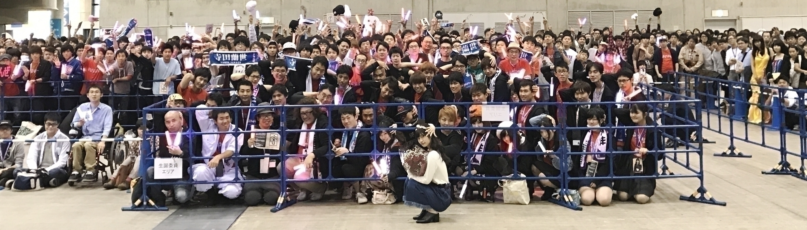
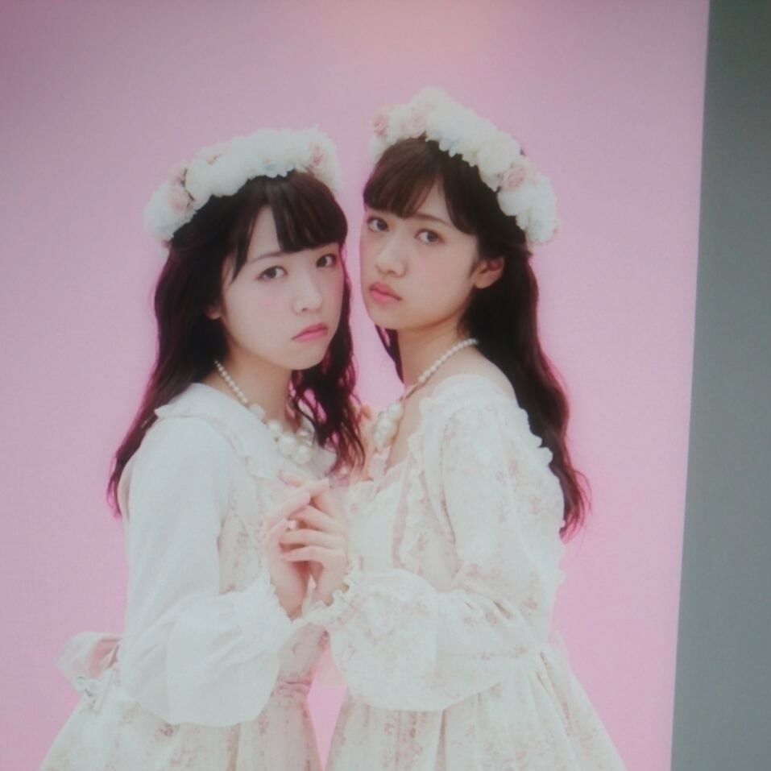
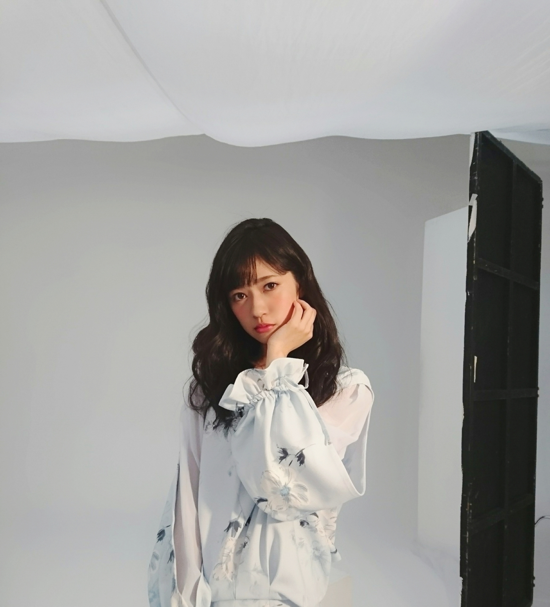

2016/1115Tue大人になったアリスは何を着るの？
今回の題名は
ETERNITAさんっという
雑誌のテーマらしいのですがテーマから可愛さが溢れてるし可愛いだけでなく
なんか深みを感じました。
いつでも何歳になっても
自分な好きなものを来て生きていきたい、、、
今私の中で上位にくい込んだお気に入りの単語です( . .)"
おはようございます
こんにちは
こんばんは
テラダです( °-°)
最近改めてブログの大切さを感じつつ言葉って凄い力を持ってるんだー
だからこそ毎回これでいいのかって
これを全世界にバラ撒いていいのかって
悩みつつ言葉を紡いでます、、、( °-°)
大げさかもしれないけど
今の社会にはそれが欠けているのかもね
いつぞやかの個別握手会◎


生誕祭
ありがとうございます
これからも
寺田蘭世は寺田蘭世として
生きていきます
何卒宜しくお願い致します✨
生誕祭は
毎年変わらず参加してくれる方
毎年増えて行く新しい方
節目の日に
一年の流れを感じます。

ハロウィンは
前回好評だったものを
着ました
仮装というよりは
コスプレでした
写真が貼りきれないので
又の機会に、、、
ああ、貼りきれない画像が沢山ある( °-°)
握手会があれば
ハロウィンとか関係なく
コスプレをする機会があるからね✨
またいつかなにか着ます、、、
お知らせ◎
ニッカンスポーツ・コム「NEWSがとまらんぜ」
毎週金曜日配信
寺田蘭世が乃木坂46内や芸能界のニュースを貪欲にキャッチし、らんぜの独特な感覚でどんどん発信していきます！
公式スケジュールに無かったのですが、、、
''発売中
UTBさん
ランダムポスター付き''
インタビューは特に読んで欲しいです。
約一年ぶりのUTBさん
いつも良きタイミングときっかけをくれる気がします。
''発売中
BLTさん ''
洋服がタイプです✨
特に茶色いワンピースの方
あれは本気で欲しいなーって( °-°)
撮影自体も秋を感じられて
オフショットいつもいっぱい撮ってくれるスタッフさんだったので
前のブログにも載せましたがまたちょこちょこ載せますね
''発売中
LIZ LISA×My Melody 2016
Autumn/Winter collection''

表紙やらせて頂きました
凄く嬉しかったここ最近のお仕事の1つです( . .)"
リズリサさんは女の子ならほとんどの子が着たり憧れたりするそんな素敵なブランドさんに関われた事が嬉しいです
マイメロちゃんも大好きなキャラクターなので
一緒に表紙に載れた事
幸せに思いますー✨
ムック本という事でもちろん特別付録のトートバッグは凄く可愛いです✨
女の子はぜひ
使いやすいサイズ感とデザインだと思います

これからも色んなお洋服が着たい✨
お洋服大好きだ✨
ボンバーイー観てくださいね✨
名古屋大好きです✨
ブランコ
乃木坂46Showがオンエアは初でしたが沢山のコメントありがとうございます！
握手会でも凄く反響がありました
素直に嬉しかったです
そして、一人の方が
「正直、初めて聞いた時は嫌いでした。でもパフォーマンス込でみたらお気に入りの楽曲になりました」って
昔から私がよく言ってることですが
人の先入観で何事も決めてほしくないなって
私も昔から
初見が無口で人の話を聞くときに真剣になりすぎて
眉間にしわが寄っちゃって
それのせいで勝手に怖いとか言われる事が良くありますが、、、
その人の性格とか
ちゃんと向き合ってほしいなって、、、
だから、この曲で
歌詞の意味を自分でのみ込んで今までの沢山の思いを詰めて踊り歌いたいです！
2016/11/15 22:30
コメント(609)
寺田蘭世とてもよきかな
蘭世かわいい☺️
ブランコめっちゃすき！
蘭世の勢いとまらんぜー！！
蘭世の勢いとまらんぜー！！
ブランコめっちゃすき！
蘭世の勢いとまらんぜー！！
蘭世の勢いとまらんぜー！！
おめでとう！
みり愛との写真最高！
ありがとう！
ありがとう！
ブランコ毎日聴いてるよ〜♪
世界中へピース。
世界中へピース。
蘭世ちゃんブログ更新ありがとう！
46showのブランコかっこよかったよー！
46showのブランコかっこよかったよー！
ブログ更新ありがとう！ー！
蘭世こんばんは！
46SHOWにいつもよりも蘭世が映っててたまらんぜだったよ！
46SHOWにいつもよりも蘭世が映っててたまらんぜだったよ！
蘭世センター本当におめでとう~
1月に香川県から京都の個握行くよ~
めっちゃ楽しみw
モバメも毎日楽しみにしてます
1月に香川県から京都の個握行くよ~
めっちゃ楽しみw
モバメも毎日楽しみにしてます
蘭世！
最近いろんな雑誌とかテレビに出ててすごいとおもってた！
最近服装とか大人っぽくなってきてすごい！
大人への近道でも
行ったのかな？w
これからも頑張って！
最近いろんな雑誌とかテレビに出ててすごいとおもってた！
最近服装とか大人っぽくなってきてすごい！
大人への近道でも
行ったのかな？w
これからも頑張って！
今日も1日お疲れ様
ブログ更新ありがとう〜
蘭世11/23の全握いくよー
言いたいこともう決まってるよw
楽しみだな〜
16thは23枚もとったから早く握手したいなー
それでは勉強してきます。
それでは今日はこの辺で
おやすみ蘭世！
ブログ更新ありがとう〜
蘭世11/23の全握いくよー
言いたいこともう決まってるよw
楽しみだな〜
16thは23枚もとったから早く握手したいなー
それでは勉強してきます。
それでは今日はこの辺で
おやすみ蘭世！
ニッカンスポーツ コムみてるで
1月京都行くから待っててね
これからも頑張れ
俺の推しメンです
1月京都行くから待っててね
これからも頑張れ
俺の推しメンです
おはようございますこんにちはこんばんはってめっちゃYouTuberみたいwww
ブランコ好きすぎて鬼リピしてる(¦3[____]
ブランコ好きすぎて鬼リピしてる(¦3[____]
ブログ更新ありがとう！
改めて初センターおめでとう！
クリライ9日当たったから楽しみにしてるね

改めて初センターおめでとう！
クリライ9日当たったから楽しみにしてるね
ブログありがとうございます。
最近雑誌の出演も沢山で嬉しいです。
今日もブランコリピートしてから寝るね。おやすみなさい。
最近雑誌の出演も沢山で嬉しいです。
今日もブランコリピートしてから寝るね。おやすみなさい。
これからも勢い止まらんぜ！
うたコン見ちゃったから、蘭世の和服姿見てみたい
うたコン見ちゃったから、蘭世の和服姿見てみたい
らんぜちゃん、この間の握手会楽しかったよ〜(^｡^)
大好き♡
大好き♡
蘭世ブログありがとう！！
この前の乃木坂46showめっちゃよかったよ！
ブランコすごくいい曲だよね！
MVもめっちゃ好きなんだ！
これからも聞くね！
これからも頑張ってね！！
とも⊿より
この前の乃木坂46showめっちゃよかったよ！
ブランコすごくいい曲だよね！
MVもめっちゃ好きなんだ！
これからも聞くね！
これからも頑張ってね！！
とも⊿より
らんぜ！ブログありがとね(๑•̀ㅂ•́)و✧
センター試験まであと2ヶ月受験終わるまであと3ヶ月握手会まであと4ヶ月がんばるね笑
いつも元気もらってます
ありがとう(^^)
握手会楽しみにしてるね～
早稲田受かってきますd(≧▽≦*)
センター試験まであと2ヶ月受験終わるまであと3ヶ月握手会まであと4ヶ月がんばるね笑
いつも元気もらってます
ありがとう(^^)
握手会楽しみにしてるね～
早稲田受かってきますd(≧▽≦*)
いつもお疲れ様です٩(●˙▽˙●)۶
UTB、BLT、リズリサチェックしたけどどれも良きでしたよ( ･ㅂ･)و ̑̑
先入観で物事決めちゃうのは良くないよねﾌﾑ(( ˘ω ˘ *))ﾌﾑ
ブランコはいい曲だし蘭世のセンター曲なので色んな場面で聴けるのを楽しみにしてますね٩(●˙▽˙●)۶
UTB、BLT、リズリサチェックしたけどどれも良きでしたよ( ･ㅂ･)و ̑̑
先入観で物事決めちゃうのは良くないよねﾌﾑ(( ˘ω ˘ *))ﾌﾑ
ブランコはいい曲だし蘭世のセンター曲なので色んな場面で聴けるのを楽しみにしてますね٩(●˙▽˙●)۶
なかなかいえてなかったけど、
蘭世アンダーセンターよかったね！あえておめでとうとは言わない。
進歩してるのは確実。もう少し我慢が必要やな！まだまだ先はあるからゆっくりゆっくり脚を進めれば絶対辿り着くからd('∀'*)
16th個握全然とれなくてほんまにごめんなさい
蘭世アンダーセンターよかったね！あえておめでとうとは言わない。
進歩してるのは確実。もう少し我慢が必要やな！まだまだ先はあるからゆっくりゆっくり脚を進めれば絶対辿り着くからd('∀'*)
16th個握全然とれなくてほんまにごめんなさい
めっちゃ頑張ってるやん俺も頑張らないと
蘭世に会いたいよ笑
蘭世に会いたいよ笑
ブログ更新ありがとう！
クリスマスライブ最終日当たったよ！！
蘭世のこと見れるの本当に楽しみだな〜
あと1ヶ月リハとか大変だと思うけど頑張ってね！
そして46SHOWのブランコと白米様よかった！
曲の雰囲気が全く違う2曲で、蘭世の表情も違うものが見れて最高だったよ！
今日はこのへんで！
また更新待ってます！！
クリスマスライブ最終日当たったよ！！
蘭世のこと見れるの本当に楽しみだな〜
あと1ヶ月リハとか大変だと思うけど頑張ってね！
そして46SHOWのブランコと白米様よかった！
曲の雰囲気が全く違う2曲で、蘭世の表情も違うものが見れて最高だったよ！
今日はこのへんで！
また更新待ってます！！
こんばんは！
ブログ更新ありがとうございます！
生誕祭の写真ありがとうございます！
BOMBER-Eすごく楽しみです！
らんぜのいきおいとまらんぜ！
ブログ更新ありがとうございます！
生誕祭の写真ありがとうございます！
BOMBER-Eすごく楽しみです！
らんぜのいきおいとまらんぜ！
らんぜブログ更新ありがとぅございます！！
生誕祭すっごい行きたかったです、、
あとあと！推しメンマフラータオル、やっと届きました！
もちろん寺田蘭世って書いてあります⤴︎︎︎⤴︎︎⤴︎︎︎
ブランコ、今までの楽曲の中でいちばんすき
生誕祭すっごい行きたかったです、、
あとあと！推しメンマフラータオル、やっと届きました！
もちろん寺田蘭世って書いてあります⤴︎︎︎⤴︎︎⤴︎︎︎
ブランコ、今までの楽曲の中でいちばんすき
乃木坂46showみたよー
最初はラップってどうなの？
って思いましたけど、イントロやサビ部分など
聞いていく内にいいなぁーって思いました。
やっぱりパフォーマンス込みで見ると違うね！
早くライブでみたいです！！！
最初はラップってどうなの？
って思いましたけど、イントロやサビ部分など
聞いていく内にいいなぁーって思いました。
やっぱりパフォーマンス込みで見ると違うね！
早くライブでみたいです！！！
蘭世ー（≧∇≦）
蘭世のブログは本当にいつも楽しみにしてる！！
いつも、蘭世の言葉に影響を貰ってる1人なんで…
これからも、蘭世は蘭世らしくいてください！
そんな蘭世を心の底から応援していくからね(*^^*)
とりあえず、ブランコ聴きながら寝るね(°▽°)
じゃ*･゜ﾟ･*:.｡..｡.:*･'(*ﾟ▽ﾟ*)'･*:.｡. .｡.:*･゜ﾟ･*
蘭世のブログは本当にいつも楽しみにしてる！！
いつも、蘭世の言葉に影響を貰ってる1人なんで…
これからも、蘭世は蘭世らしくいてください！
そんな蘭世を心の底から応援していくからね(*^^*)
とりあえず、ブランコ聴きながら寝るね(°▽°)
じゃ*･゜ﾟ･*:.｡..｡.:*･'(*ﾟ▽ﾟ*)'･*:.｡. .｡.:*･゜ﾟ･*
蘭世ブログ更新ありがとう！
16枚目の個握取れたから行くよ！
ブランコいい曲だね、個人的に好きな曲だよ。
体調に気を付けてね！
16枚目の個握取れたから行くよ！
ブランコいい曲だね、個人的に好きな曲だよ。
体調に気を付けてね！
蘭世ブログ更新ありがとう！
蘭世のブログには毎回強い意思とかメッセージがあって、毎回読むのが楽しみ！！
最近は寒くなってきたので、体調に気を付けて頑張ってね！！
蘭世のブログには毎回強い意思とかメッセージがあって、毎回読むのが楽しみ！！
最近は寒くなってきたので、体調に気を付けて頑張ってね！！
蘭世〜～♡
本当に久しぶりにコメントします(*´艸｀*)♡
最近、すごい自分のなかで蘭世がブォォォってキテて推し変しそうです、してもいいですか？(;_;)
今度の握手会も行こうと思ってます！
あと、これからたくさんブログにコメントします！
乃木坂46showのブランコ、本当にかっこよくてMV初めてみた時同じで、鳥肌たちました((；ﾟДﾟ)))
表現力すごいなぁって勝手に感動しちゃったよ(;_;)
体調に気を付けて頑張ってね！！！！
本当に久しぶりにコメントします(*´艸｀*)♡
最近、すごい自分のなかで蘭世がブォォォってキテて推し変しそうです、してもいいですか？(;_;)
今度の握手会も行こうと思ってます！
あと、これからたくさんブログにコメントします！
乃木坂46showのブランコ、本当にかっこよくてMV初めてみた時同じで、鳥肌たちました((；ﾟДﾟ)))
表現力すごいなぁって勝手に感動しちゃったよ(;_;)
体調に気を付けて頑張ってね！！！！
蘭世の勢いとまらんぜ！✧ ٩( ๑•̀o•́๑ )و
みりあ♪蘭世♪ そのポーズ！はwink ではないですか♪♪♪( ・∀・) おっちゃんの青春時代♪(*⌒∇⌒*)
素晴らしい生誕祭だったみたいで嬉しいです。
自分は行けなかったから、来年は必ず参加しますね！
やっぱり蘭世が出てる雑誌などはチェックするのがすごく楽しみ！ 蘭世のファッションもすごく好きです。
確かに、先入観で決めてほしくないよね。私も、最初は怖そうって言われて、いざ話すと話しやすいってよく言われます（笑） 見た目で決めつけられるのはほんとに困る^^;
自分は行けなかったから、来年は必ず参加しますね！
やっぱり蘭世が出てる雑誌などはチェックするのがすごく楽しみ！ 蘭世のファッションもすごく好きです。
確かに、先入観で決めてほしくないよね。私も、最初は怖そうって言われて、いざ話すと話しやすいってよく言われます（笑） 見た目で決めつけられるのはほんとに困る^^;
ブログ更新ありがとーーー！！
オフショットあげてくれるのさりげなく毎回楽しみにしてる笑
あとブランコは最初ちょっと違和感あったけど、らんぜのセンター曲だしリピートしまくってたら普通にハマっちゃいました笑
これからクリスマスライブをセンターで迎えるだろうから体調には気を付けてね！絶対行くから！
次の握手会はまだ先だけど髪型は1番ポニーテールが好きだから1回はして欲しい〜
これからも応援し続けるよーー！
オフショットあげてくれるのさりげなく毎回楽しみにしてる笑
あとブランコは最初ちょっと違和感あったけど、らんぜのセンター曲だしリピートしまくってたら普通にハマっちゃいました笑
これからクリスマスライブをセンターで迎えるだろうから体調には気を付けてね！絶対行くから！
次の握手会はまだ先だけど髪型は1番ポニーテールが好きだから1回はして欲しい〜
これからも応援し続けるよーー！
蘭世、センターおめでとう！
蘭世の勢いもとまらんぜ！
自分らしく輝いてください！
蘭世の勢いもとまらんぜ！
自分らしく輝いてください！
ブログありがとー蘭世
こんばんは。
生誕祭から１ヶ月以上も経ったとは思えないくらいまだ鮮明に覚えてます。あのスピーチで寺田蘭世という女性をもっと多くの人が応援してくれるようになればいいなと思います。
メガネ変えたんですよ！蘭世がこうの方が良さそうかなとアドバイスくれたので...
多分忘れてるだろうなって思って自分から言ってしまう失態...
今年は蘭世と握手&お話出来るのも来週の全握が最後かな...
ライブは行きます
ブランコとかとか生で見たいし、盛り上がりたいし
楽しみにしてますd(>_・ )
生誕祭から１ヶ月以上も経ったとは思えないくらいまだ鮮明に覚えてます。あのスピーチで寺田蘭世という女性をもっと多くの人が応援してくれるようになればいいなと思います。
メガネ変えたんですよ！蘭世がこうの方が良さそうかなとアドバイスくれたので...
多分忘れてるだろうなって思って自分から言ってしまう失態...
今年は蘭世と握手&お話出来るのも来週の全握が最後かな...
ライブは行きます
ブランコとかとか生で見たいし、盛り上がりたいし
楽しみにしてますd(>_・ )
拝啓
寺田蘭世様
アンダーセンターおめでとう〜
ブランコ聴いたよ。凄くいい曲たまね。
サンエトもいい曲だし蘭世にとっていいシングルになったね〜
まだ、通過点だけどね〜
これからも、前に進む蘭世を応援するからね。
蘭世最高だよ。ありがとう
寺田蘭世様
アンダーセンターおめでとう〜
ブランコ聴いたよ。凄くいい曲たまね。
サンエトもいい曲だし蘭世にとっていいシングルになったね〜
まだ、通過点だけどね〜
これからも、前に進む蘭世を応援するからね。
蘭世最高だよ。ありがとう
お疲れ様です！！乃木坂46showすごかったですびっくりしました。白米様ですごく可愛く映ってたのがブランコではすごく力強い目つきになってて表情とかものすごかったです！！寺田蘭世にはこんなにも引き出しがあったのか！と推しメンと言わせていただいて2年近くになりますが今さらそんなことを思いました、なんかすいません笑
改めて寺田蘭世はセンターに立てる子だと思いました、自分の信念だけはブレずに持ちながらがんばってください！！
改めて寺田蘭世はセンターに立てる子だと思いました、自分の信念だけはブレずに持ちながらがんばってください！！
蘭世〜ブログ更新ありがとう
らんぜ！ブログ更新ありがとう！
ユンです(*^^*)
らんぜのブログをみてすっごく幸せになりました！
僕って本当に幸せ者です(*´ω｀*)
今日はボンバーの放送日ですね！！
すっごく楽しみです！
早く翻訳してゆっくり見たいです！
感想と今日の話とか
いろいろ書きたいから
夜にまた書きますね！
じゃ！
ユン
ユンです(*^^*)
らんぜのブログをみてすっごく幸せになりました！
僕って本当に幸せ者です(*´ω｀*)
今日はボンバーの放送日ですね！！
すっごく楽しみです！
早く翻訳してゆっくり見たいです！
感想と今日の話とか
いろいろ書きたいから
夜にまた書きますね！
じゃ！
ユン
蘭世ちゃん！ブログありがと！
生誕祭楽しかったですか？？
蘭世ちゃんのこれからのこと、語ってくれたの嬉しかったです
もっと蘭世ちゃんお話したい！！全握絶対に遊びに行くね！
生誕祭楽しかったですか？？
蘭世ちゃんのこれからのこと、語ってくれたの嬉しかったです
もっと蘭世ちゃんお話したい！！全握絶対に遊びに行くね！
最近のお気に入りの単語は
精神的向上心のないものは馬鹿だ
道を極めるためには
その事以外をすべて捨てるべきだっていう意味なんやけど
まだ俺にはそんな覚悟ない
蘭世と会いたいしだからそれを捨てるのは無理やし
って感じ
生誕祭行けなくてごめん
でもメッセージカードは書いたよ！
ハイブリッドな服また見たいなー
ＵＴＢはちゃんと蘭世のポスターと
トレードしてもらいましたー( ’ω’)/
リズリザは高くてちょっと買うのためらってる(￣▽￣;)
ボンバーイYouTubeでみた！
モバメの私服 はあれやったんやな！
あと俺は初めから蘭世のこと好きやで
寺田蘭世とてもよきかな
精神的向上心のないものは馬鹿だ
道を極めるためには
その事以外をすべて捨てるべきだっていう意味なんやけど
まだ俺にはそんな覚悟ない
蘭世と会いたいしだからそれを捨てるのは無理やし
って感じ
生誕祭行けなくてごめん
でもメッセージカードは書いたよ！
ハイブリッドな服また見たいなー
ＵＴＢはちゃんと蘭世のポスターと
トレードしてもらいましたー( ’ω’)/
リズリザは高くてちょっと買うのためらってる(￣▽￣;)
ボンバーイYouTubeでみた！
モバメの私服 はあれやったんやな！
あと俺は初めから蘭世のこと好きやで
寺田蘭世とてもよきかな
握手会ありがと。
ブランコ、よいよね。
アンダラメリクリ、行きます！
よろしくね。
ブランコ、よいよね。
アンダラメリクリ、行きます！
よろしくね。
ブログ更新ありがとうー!!
蘭世の勢い止まらんぜーヽ(・∀・)ノ
ボンバーイー見たよ(°▽°)
握手会で着てた服が見られて、可愛さを
再発見しました。
UTB買ったけど、ポスターは蘭世ちゃん
じゃなかった…(T_T)
来月の握手会も行くのでよろしく!!
蘭世の勢い止まらんぜーヽ(・∀・)ノ
ボンバーイー見たよ(°▽°)
握手会で着てた服が見られて、可愛さを
再発見しました。
UTB買ったけど、ポスターは蘭世ちゃん
じゃなかった…(T_T)
来月の握手会も行くのでよろしく!!
ブログ更新お疲れサマンサ！
UTBちゃんとチェックしたよ〜
ファッション好きな蘭世が将来専属モデルとかになったら欠かさず購入するね！！！！
UTBちゃんとチェックしたよ〜
ファッション好きな蘭世が将来専属モデルとかになったら欠かさず購入するね！！！！
ブランコ、最初しっくり
来なかったけど何回も聞いとるうちに
どんどん好きになってった曲。
今では毎日聴いてるよ！
アンダーライブ当たったから
生でブランコ聴けるの
すっごく楽しみにしてます( ' ' )
リズリサみたいな甘い洋服着る蘭世も
好きやけど、古着着とったり
ボーイッシュなん着とる蘭世も好き。
ロングのゆるふわ巻きって
やっぱ最強に可愛いし
似合っとるなって思う
来なかったけど何回も聞いとるうちに
どんどん好きになってった曲。
今では毎日聴いてるよ！
アンダーライブ当たったから
生でブランコ聴けるの
すっごく楽しみにしてます( ' ' )
リズリサみたいな甘い洋服着る蘭世も
好きやけど、古着着とったり
ボーイッシュなん着とる蘭世も好き。
ロングのゆるふわ巻きって
やっぱ最強に可愛いし
似合っとるなって思う


今日もメールありがとう